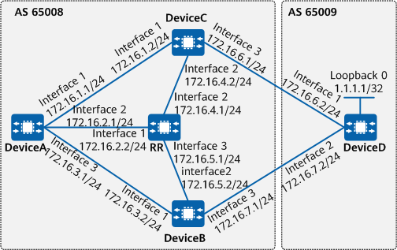

Example for Configuring the BGP Add-Path Function
Networking Requirements
On the network shown in Figure 1, DeviceA, DeviceB, and DeviceC are clients of the RR. DeviceD establishes an EBGP peer relationship with each of DeviceB and DeviceC.
To ensure reliable data transmission, configure the BGP Add-Path function on the RR and enable DeviceA to accept Add-Path routes. Then, the RR can send multiple preferred routes with the same prefix to DeviceA to form multiple links to the same destination.

In this example, interface 1, interface 2, and interface 3 represent 10GE0/0/1, 10GE0/0/2, and 10GE0/0/3, respectively.

To complete the configuration, you need the following data:
Router IDs and AS numbers of DeviceA, DeviceB, DeviceC, DeviceD, and the RR
Precautions
- When configuring the BGP Add-Path function, enable the capability of sending Add-Path routes on the route sender and the capability of accepting Add-Path routes on the route receiver so that Add-Path routes can be exchanged between the two ends. If BGP Add-Path is enabled and the device is also configured to change the next hops of the routes to be advertised to the local address, a routing loop may occur.
- To improve security, you are advised to deploy BGP security measures. For details, see "Configuring BGP Authentication." Keychain authentication is used as an example. For details, see Example for Configuring Keychain Authentication for BGP.
Configuration Roadmap
The configuration roadmap is as follows:
Configure IP addresses for interfaces.
Configure basic BGP functions on each device.
Configure the BGP Add-Path function on the RR. Enable the RR to send Add-Path routes to DeviceA, and set the number of preferred Add-Path routes that the RR can send to DeviceA.
Enable DeviceA to accept BGP Add-Path routes advertised by the RR.
Procedure
- Assign an IP address to each involved interface. For detailed configurations, see Configuration Scripts.
- Configure basic BGP functions. Configure an IBGP peer relationship between the RR and each of DeviceA, DeviceB, and DeviceC. DeviceA, DeviceB, and DeviceC are clients of the RR. Configure an EBGP peer relationship between DeviceD and each of DeviceB and DeviceC.
# Configure DeviceA.
[DeviceA] bgp 65008 [DeviceA-bgp] router-id 1.1.1.1 [DeviceA-bgp] peer 172.16.2.2 as-number 65008 [DeviceA-bgp] import-route direct [DeviceA-bgp] quit
# Configure DeviceB.
[DeviceB] bgp 65008 [DeviceB-bgp] router-id 2.2.2.2 [DeviceB-bgp] peer 172.16.5.1 as-number 65008 [DeviceB-bgp] peer 172.16.7.2 as-number 65009 [DeviceB-bgp] import-route direct [DeviceB-bgp] quit
# Configure DeviceC.
[DeviceC] bgp 65008 [DeviceC-bgp] router-id 3.3.3.3 [DeviceC-bgp] peer 172.16.4.1 as-number 65008 [DeviceC-bgp] peer 172.16.6.2 as-number 65009 [DeviceC-bgp] import-route direct [DeviceC-bgp] quit
# Configure DeviceD.
[DeviceD] bgp 65009 [DeviceD-bgp] router-id 4.4.4.4 [DeviceD-bgp] peer 172.16.6.1 as-number 65008 [DeviceD-bgp] peer 172.16.7.1 as-number 65008 [DeviceD-bgp] import-route direct [DeviceD-bgp] quit
# Configure the RR.
[RR] bgp 65008 [RR-bgp] router-id 5.5.5.5 [RR-bgp] peer 172.16.2.1 as-number 65008 [RR-bgp] peer 172.16.4.2 as-number 65008 [RR-bgp] peer 172.16.5.2 as-number 65008 [RR-bgp] peer 172.16.2.1 reflect-client [RR-bgp] peer 172.16.4.2 reflect-client [RR-bgp] peer 172.16.5.2 reflect-client [RR-bgp] import-route direct [RR-bgp] quit
# Check information about the routes to 1.1.1.1 on DeviceA.
[DeviceA] display bgp routing-table 1.1.1.1 BGP local router ID : 1.1.1.1 Local AS number : 65008 Paths: 1 available, 1 best, 1 select, 0 best-external, 0 add-path BGP routing table entry information of 1.1.1.1/32: From: 172.16.2.2 (5.5.5.5) Route Duration: 0d00h00m25s Relay IP Nexthop: 172.16.2.2 Relay IP Out-interface: 10GE0/0/3 Original nexthop: 172.16.7.2 Qos information : 0x0 AS-path 65009, origin incomplete, MED 0, localpref 100, pref-val 0, valid, internal, best, select, pre 255 Originator: 2.2.2.2 Cluster list: 5.5.5.5 Not advertised to any peer yet
The preceding command output shows that DeviceA has accepted only one BGP route to 1.1.1.1 from the RR.
- Enable the BGP Add-Path function on the RR. Enable the RR to send Add-Path routes to DeviceA, set the number of preferred routes that the RR can send to DeviceA, and enable DeviceA to accept BGP Add-Path routes sent by the RR.
# Configure the RR.
[RR] bgp 65008 [RR-bgp] bestroute add-path path-number 2 [RR-bgp] peer 172.16.2.1 capability-advertise add-path send [RR-bgp] peer 172.16.2.1 advertise add-path path-number 2 [RR-bgp] quit
# Configure DeviceA.
[DeviceA] bgp 65008 [DeviceA-bgp] peer 172.16.2.2 capability-advertise add-path receive [DeviceA-bgp] quit
Verifying the Configuration
# Check information about the routes to 1.1.1.1 on DeviceA.
[DeviceA] display bgp routing-table 1.1.1.1 BGP local router ID : 1.1.1.1 Local AS number : 65008 Paths: 2 available, 1 best, 1 select, 0 best-external, 0 add-path BGP routing table entry information of 1.1.1.1/32: From: 172.16.2.2 (5.5.5.5) Route Duration: 0d00h00m48s Relay IP Nexthop: 172.16.2.2 Relay IP Out-interface: 10GE0/0/3 Original nexthop: 172.16.7.2 Qos information : 0x0 AS-path 65009, origin incomplete, MED 0, localpref 100, pref-val 0, valid, internal, best, select, pre 255 Received path-id: 0 Originator: 2.2.2.2 Cluster list: 5.5.5.5 Not advertised to any peer yet BGP routing table entry information of 1.1.1.1/32: From: 172.16.2.2 (5.5.5.5) Route Duration: 0d00h00m48s Relay IP Nexthop: 172.16.2.2 Relay IP Out-interface: 10GE0/0/1 Original nexthop: 172.16.6.2 Qos information : 0x0 AS-path 65009, origin incomplete, MED 0, localpref 100, pref-val 0, valid, internal, pre 255, not preferred for router ID Received path-id: 1 Originator: 3.3.3.3 Cluster list: 5.5.5.5 Not advertised to any peer yet
The preceding command output shows that BGP Add-Path-enabled DeviceA has accepted two routes from the RR. The route with the original next-hop IP address of 172.16.7.2 is the optimal route selected by the RR, and the other one with the original next-hop IP address of 172.16.6.2 is an Add-Path route.
# Check information about the routes to 1.1.1.1 on the RR.
[RR] display bgp routing-table 1.1.1.1 BGP local router ID : 5.5.5.5 Local AS number : 65008 Paths: 2 available, 1 best, 1 select, 0 best-external, 1 add-path BGP routing table entry information of 1.1.1.1/32: RR-client route. From: 172.16.5.2 (2.2.2.2) Route Duration: 0d00h19m39s Relay IP Nexthop: 172.16.5.2 Relay IP Out-interface: 10GE0/0/3 Original nexthop: 172.16.7.2 Qos information : 0x0 AS-path 65009, origin incomplete, MED 0, localpref 100, pref-val 0, valid, internal, best, select, pre 255 Advertised to such 3 peers: 172.16.5.2 172.16.4.2 172.16.2.1 BGP routing table entry information of 1.1.1.1/32: RR-client route. From: 172.16.4.2 (3.3.3.3) Route Duration: 0d00h19m41s Relay IP Nexthop: 172.16.4.2 Relay IP Out-interface: 10GE0/0/2 Original nexthop: 172.16.6.2 Qos information : 0x0 AS-path 65009, origin incomplete, MED 0, localpref 100, pref-val 0, valid, internal, add-path, pre 255, not preferred for router ID Advertised to such 1 peers: 172.16.2.1
The preceding command output shows that the RR has sent the optimal route to all its clients but has sent the Add-Path route only to DeviceA.
Configuration Scripts
DeviceA
# sysname DeviceA # interface 10GE0/0/1 ip address 172.16.1.1 255.255.255.0 # interface 10GE0/0/2 ip address 172.16.2.1 255.255.255.0 # interface 10GE0/0/3 ip address 172.16.3.1 255.255.255.0 # bgp 65008 router-id 1.1.1.1 peer 172.16.2.2 as-number 65008 # ipv4-family unicast import-route direct peer 172.16.2.2 enable peer 172.16.2.2 capability-advertise add-path receive # return
DeviceB
# sysname DeviceB # interface 10GE0/0/1 ip address 172.16.3.2 255.255.255.0 # interface 10GE0/0/2 ip address 172.16.5.2 255.255.255.0 # interface 10GE0/0/3 ip address 172.16.7.1 255.255.255.0 # bgp 65008 router-id 2.2.2.2 peer 172.16.5.1 as-number 65008 peer 172.16.7.2 as-number 65009 # ipv4-family unicast import-route direct peer 172.16.5.1 enable peer 172.16.7.2 enable # return
DeviceC
# sysname DeviceC # interface 10GE0/0/1 ip address 172.16.1.2 255.255.255.0 # interface 10GE0/0/2 ip address 172.16.4.2 255.255.255.0 # interface 10GE0/0/3 ip address 172.16.6.1 255.255.255.0 # bgp 65008 router-id 3.3.3.3 peer 172.16.4.1 as-number 65008 peer 172.16.6.2 as-number 65009 # ipv4-family unicast import-route direct peer 172.16.4.1 enable peer 172.16.6.2 enable # return
DeviceD
# sysname DeviceD # interface 10GE0/0/1 ip address 172.16.6.2 255.255.255.0 # interface 10GE0/0/2 ip address 172.16.7.2 255.255.255.0 # interface LoopBack0 ip address 1.1.1.1 255.255.255.255 # bgp 65009 router-id 4.4.4.4 peer 172.16.6.1 as-number 65008 peer 172.16.7.1 as-number 65008 # ipv4-family unicast import-route direct peer 172.16.6.1 enable peer 172.16.7.1 enable # return
RR
# sysname RR # interface 10GE0/0/1 ip address 172.16.2.2 255.255.255.0 # interface 10GE0/0/2 ip address 172.16.4.1 255.255.255.0 # interface 10GE0/0/3 ip address 172.16.5.1 255.255.255.0 # bgp 65008 router-id 5.5.5.5 peer 172.16.2.1 as-number 65008 peer 172.16.4.2 as-number 65008 peer 172.16.5.2 as-number 65008 # ipv4-family unicast import-route direct bestroute add-path path-number 2 peer 172.16.2.1 enable peer 172.16.2.1 reflect-client peer 172.16.2.1 capability-advertise add-path send peer 172.16.2.1 advertise add-path path-number 2 peer 172.16.4.2 enable peer 172.16.4.2 reflect-client peer 172.16.5.2 enable peer 172.16.5.2 reflect-client # return